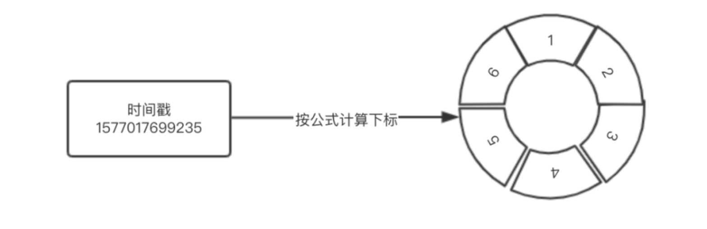
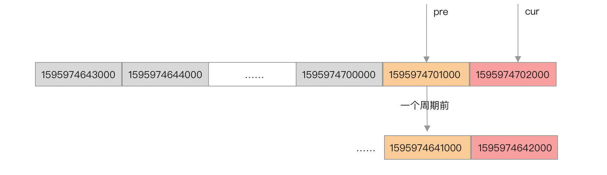

- 01 开篇词：一次服务雪崩问题排查经历.md.html
- 02 为什么需要服务降级以及常见的几种降级方式.md.html
- 03 为什么选择 Sentinel，Sentinel 与 Hystrix 的对比.md.html
- 04 Sentinel 基于滑动窗口的实时指标数据统计.md.html
- 05 Sentinel 的一些概念与核心类介绍.md.html
- 06 Sentinel 中的责任链模式与 Sentinel 的整体工作流程.md.html
- 07 Java SPI 及 SPI 在 Sentinel 中的应用.md.html
- 08 资源指标数据统计的实现全解析（上）.md.html
- 09 资源指标数据统计的实现全解析（下）.md.html
- 10 限流降级与流量效果控制器（上）.md.html
- 11 限流降级与流量效果控制器（中）.md.html
- 12 限流降级与流量效果控制器（下）.md.html
- 13 熔断降级与系统自适应限流.md.html
- 14 黑白名单限流与热点参数限流.md.html
- 15 自定义 ProcessorSlot 实现开关降级.md.html
- 16 Sentinel 动态数据源：规则动态配置.md.html
- 17 Sentinel 主流框架适配.md.html
- 18 Sentinel 集群限流的实现（上）.md.html
- 19 Sentinel 集群限流的实现（下）.md.html
- 20 结束语：Sentinel 对应用的性能影响如何？.md.html
- 21 番外篇：Sentinel 1.8.0 熔断降级新特性解读.md.html
- 捐赠
04 Sentinel 基于滑动窗口的实时指标数据统计
Sentinel 是基于滑动窗口实现的实时指标数据统计，要深入理解 Sentinel 的限流实现原理，首先我们得要了解其指标数据统计的实现，例如如何统计 QPS。
为了简单，我们不直接分析 Sentinel 的源码，而是分析笔者从 Sentinel 中摘抄的，且经过改造后的“qps-helper”工具包的代码。总体上是一样的，笔者去掉了一些不需要的指标统计，以及将 Sentinel 一些自定义的类替换成 JDK 提供的类，封装成通用的 QPS 统计工具包。当然，您也可以直接看 Sentinel 的源码，差别不大，源码在 sentinel-core 的 slots 包下。
qps-helper 代码下载地址：
Bucket
Sentinel 使用 Bucket 统计一个窗口时间内的各项指标数据，这些指标数据包括请求总数、成功总数、异常总数、总耗时、最小耗时、最大耗时等，而一个 Bucket 可以是记录一秒内的数据，也可以是 10 毫秒内的数据，这个时间长度称为窗口时间。qps-helper 只统计请求成功总数、请求异常数、总耗时。
public class MetricBucket {
/**
* 存储各事件的计数，比如异常总数、请求总数等
*/
private final LongAdder[] counters;
/**
* 这段事件内的最小耗时
*/
private volatile long minRt;
}
如上面代码所示，Bucket 记录一段时间内的各项指标数据用的是一个 LongAdder 数组，LongAdder 保证了数据修改的原子性，并且性能比 AtomicInteger 表现更好。数组的每个元素分别记录一个时间窗口内的请求总数、异常数、总耗时，如下图所示。
Sentinel 用枚举类型 MetricEvent 的 ordinal 属性作为下标，ordinal 的值从 0 开始，按枚举元素的顺序递增，正好可以用作数组的下标。在 qps-helper 中，LongAdder 被替换为 j.u.c 包下的 atomic 类了，并且只保留 EXCEPTION、SUCCESS、RT，代码如下。
// 事件类型
public enum MetricEvent {
EXCEPTION,// 异常 对应数组下标为 0
SUCCESS, // 成功 对应数组下标为 1
RT // 耗时 对应数组下标为 2
}
当需要获取 Bucket 记录总的成功请求数或者异常总数、总的请求处理耗时，可根据事件类型（MetricEvent）从 Bucket 的 LongAdder 数组中获取对应的 LongAdder，并调用 sum 方法获取总数，如下代码所示。
// 假设事件为 MetricEvent.SUCCESS
public long get(MetricEvent event) {
// MetricEvent.SUCCESS.ordinal()为 1
return counters[event.ordinal()].sum();
}
当需要 Bucket 记录一个成功请求或者一个异常请求、处理请求的耗时，可根据事件类型（MetricEvent）从 LongAdder 数组中获取对应的 LongAdder，并调用其 add 方法，如下代码所示。
// 假设事件为 MetricEvent.RT
public void add(MetricEvent event, long n) {
// MetricEvent.RT.ordinal()为 2
counters[event.ordinal()].add(n);
}
滑动窗口
如果我们希望能够知道某个接口的每秒处理成功请求数（成功 QPS）、每秒处理失败请求数（失败 QPS），以及处理每个成功请求的平均耗时（avg RT），我们只需要控制 Bucket 统计一秒钟的指标数据即可。我们只需要控制 Bucket 统计一秒钟内的指标数据即可。但如何才能确保 Bucket 存储的就是精确到 1 秒内的数据呢？
最 low 的做法就是启一个定时任务每秒创建一个 Bucket，但统计出来的数据误差绝对很大。Sentinel 是这样实现的，它定义一个 Bucket 数组，根据时间戳来定位到数组的下标。假设我们需要统计每 1 秒处理的请求数等数据，且只需要保存最近一分钟的数据。那么 Bucket 数组的大小就可以设置为 60，每个 Bucket 的 windowLengthInMs（窗口时间）大小就是 1000 毫秒（1 秒），如下图所示。
由于每个 Bucket 存储的是 1 秒的数据，假设 Bucket 数组的大小是无限大的，那么我们只需要将当前时间戳去掉毫秒部分就能得到当前的秒数，将得到的秒数作为索引就能从 Bucket 数组中获取当前时间窗口的 Bucket。
一切资源均有限，所以我们不可能无限的存储 Bucket，我们也不需要存储那么多历史数据在内存中。当我们只需要保留一分钟的数据时，Bucket 数组的大小就可以设置为 60，我们希望这个数组可以循环使用，并且永远只保存最近 1 分钟的数据，这样不仅可以避免频繁的创建 Bucket，也减少内存资源的占用。
这种情况下如何定位 Bucket 呢？我们只需要将当前时间戳去掉毫秒部分得到当前的秒数，再将得到的秒数与数组长度取余数，就能得到当前时间窗口的 Bucket 在数组中的位置（索引），如下图所示：

根据当前时间戳计算出当前时间窗口的 Bucket 在数组中的索引，算法实现如下：
private int calculateTimeIdx(long timeMillis) {
/**
* 假设当前时间戳为 1577017699235
* windowLengthInMs 为 1000 毫秒（1 秒）
* 则
* 将毫秒转为秒 => 1577017699
* 映射到数组的索引为 => 19
*/
long timeId = timeMillis / windowLengthInMs;
return (int) (timeId % array.length());
}
calculateTimeIdx 方法中，取余数就是实现循环利用数组。如果想要获取连续的一分钟的 Bucket 数据，就不能简单的从头开始遍历数组，而是指定一个开始时间和结束时间，从开始时间戳开始计算 Bucket 存放在数组中的下标，然后循环每次将开始时间戳加上 1 秒，直到开始时间等于结束时间。
由于循环使用的问题，当前时间戳与一分钟之前的时间戳和一分钟之后的时间戳都会映射到数组中的同一个 Bucket，因此，必须要能够判断取得的 Bucket 是否是统计当前时间窗口内的指标数据，这便要数组每个元素都存储 Bucket 时间窗口的开始时间戳。
比如当前时间戳是 1577017699235，Bucket 统计一秒的数据，将时间戳的毫秒部分全部替换为 0，就能得到 Bucket 时间窗口的开始时间戳为 1577017699000。
计算 Bucket 时间窗口的开始时间戳代码实现如下：
protected long calculateWindowStart(long timeMillis) {
/**
* 假设窗口大小为 1000 毫秒，即数组每个元素存储 1 秒钟的统计数据
* timeMillis % windowLengthInMs 就是取得毫秒部分
* timeMillis - 毫秒数 = 秒部分
* 这就得到每秒的开始时间戳
*/
return timeMillis - timeMillis % windowLengthInMs;
}
WindowWrap
因为 Bucket 自身并不保存时间窗口信息，所以 Sentinel 给 Bucket 加了一个包装类 WindowWrap，用于记录 Bucket 的时间窗口信息，WindowWrap 源码如下。
public class WindowWrap<T> {
/**
* 窗口时间长度（毫秒）
*/
private final long windowLengthInMs;
/**
* 开始时间戳（毫秒）
*/
private long windowStart;
/**
* 统计数据
*/
private T value;
public WindowWrap(long windowLengthInMs, long windowStart, T value) {
this.windowLengthInMs = windowLengthInMs;
this.windowStart = windowStart;
this.value = value;
}
}
如前面所说，假设 Bucket 以秒为单位统计指标数据，那么 Bucket 统计的就是一秒内的请求总数、异常总数这些指标数据。换算为毫秒为单位，比如时间窗口为 [1577017699000,1577017699999)，那么 1577017699000 就被称为该时间窗口的开始时间（windowStart）。一秒转为毫秒是 1000，所以 1000 就称为窗口时间大小（windowLengthInMs）。
windowStart + windowLengthInMs = 时间窗口的结束时间
只要知道时间窗口的开始时间和窗口时间大小，只需要给定一个时间戳，就能知道该时间戳是否在 Bucket 的窗口时间内，代码实现如下。
/**
* 检查给定的时间戳是否在当前 bucket 中。
*
* @param timeMillis 时间戳，毫秒
* @return
*/
public boolean isTimeInWindow(long timeMillis) {
return windowStart <= timeMillis && timeMillis < windowStart + windowLengthInMs;
}
通过时间戳定位 Bucket
Bucket 用于统计各项指标数据，WindowWrap 用于记录 Bucket 的时间窗口信息，记录窗口的开始时间和窗口的大小，WindowWrap 数组就是一个滑动窗口。
当接收到一个请求时，可根据接收到请求的时间戳计算出一个数组索引，从滑动窗口（WindowWrap 数组）中获取一个 WindowWrap，从而获取 WindowWrap 包装的 Bucket，调用 Bucket 的 add 方法记录相应的事件。
根据当前时间戳定位 Bucket 的算法实现如下。
/**
* 根据时间戳获取 bucket
*
* @param timeMillis 时间戳（毫秒）
* @return 如果时间有效，则在提供的时间戳处显示当前存储桶项；如果时间无效，则为空
*/
public WindowWrap<T> currentWindow(long timeMillis) {
if (timeMillis < 0) {
return null;
}
// 获取时间戳映射到的数组索引
int idx = calculateTimeIdx(timeMillis);
// 计算 bucket 时间窗口的开始时间
long windowStart = calculateWindowStart(timeMillis);
// 从数组中获取 bucket
while (true) {
WindowWrap<T> old = array.get(idx);
// 一般是项目启动时，时间未到达一个周期，数组还没有存储满，没有到复用阶段，所以数组元素可能为空
if (old == null) {
// 创建新的 bucket，并创建一个 bucket 包装器
WindowWrap<T> window = new WindowWrap<T>(windowLengthInMs, windowStart, newEmptyBucket(timeMillis));
// cas 写入，确保线程安全，期望数组下标的元素是空的，否则就不写入，而是复用
if (array.compareAndSet(idx, null, window)) {
return window;
} else {
Thread.yield();
}
}
// 如果 WindowWrap 的 windowStart 正好是当前时间戳计算出的时间窗口的开始时间，则就是我们想要的 bucket
else if (windowStart == old.windowStart()) {
return old;
}
// 复用旧的 bucket
else if (windowStart > old.windowStart()) {
if (updateLock.tryLock()) {
try {
// 重置 bucket，并指定 bucket 的新时间窗口的开始时间
return resetWindowTo(old, windowStart);
} finally {
updateLock.unlock();
}
} else {
Thread.yield();
}
}
// 计算出来的当前 bucket 时间窗口的开始时间比数组当前存储的 bucket 的时间窗口开始时间还小，
// 直接返回一个空的 bucket 就行
else if (windowStart < old.windowStart()) {
return new WindowWrap<T>(windowLengthInMs, windowStart, newEmptyBucket(timeMillis));
}
}
}
上面代码实现的是，通过当前时间戳计算出当前时间窗口的 Bucket（New Buket）在数组中的索引（cidx），以及 Bucket 时间窗口的开始时间，通过索引从数组中取得 Bucket（Old Bucket）。
- 当索引（cidx）处不存在 Bucket 时，创建一个新的 Bucket，并且确保线程安全写入到数组 cidx 处，将此 Bucket 返回；
- 当 Old Bucket 不为空时，且 Old Bucket 时间窗口的开始时间与当前计算得到的 New Buket 的时间窗口开始时间相等时，该 Bucket 就是当前要找的 Bucket，直接返回；
- 当计算出 New Bucket 时间窗口的开始时间大于当前数组 cidx 位置存储的 Old Bucket 时间窗口的开始时间时，可以复用这个 Old Bucket，确保线程安全重置 Bucket，并返回；
- 当计算出 New Bucket 时间窗口的开始时间小于当前数组 cidx 位置存储的 Old Bucket 时间窗口的开始时间时，直接返回一个空的 Bucket，因为时间不会倒退。
获取当前时间戳的前一个 Bucket
根据当前时间戳计算出当前 Bucket 的时间窗口开始时间，用当前 Bucket 的时间窗口开始时间减去一个窗口时间大小就能定位出前一个 Bucket。
由于是使用数组实现滑动窗口，数组的每个元素都会被循环使用，因此当前 Bucket 与前一个 Bucket 会有相差一个完整的滑动窗口周期的可能，如下图所示。

当前时间戳对应的 Bucket 的时间窗口开始时间戳为 1595974702000，而前一个 Bucket 的时间窗口开始时间戳可能是 1595974701000，也可能是一个滑动窗口周期之前的 1595974641000。所以，在获取到当前 Bucket 的前一个 Bucket 时，需要根据 Bucket 的时间窗口开始时间与当前时间戳比较，如果跨了一个周期就是无效的。
总结
- WindowWrap 用于包装 Bucket，随着 Bucket 一起创建。
- WindowWrap 数组实现滑动窗口，Bucket 只负责统计各项指标数据，WindowWrap 用于记录 Bucket 的时间窗口信息。
- 定位 Bucket 实际上是定位 WindowWrap，拿到 WindowWrap 就能拿到 Bucket。
© 2019 - 2023 Liangliang Lee. Powered by gin and hexo-theme-book.